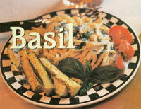
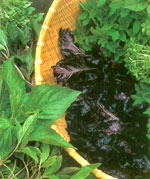
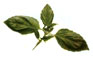

Basil 'Passport To Paradise'
June/July 2003
by Barbara Pleasant
Fresh basil may well be the signature herb of summer, perfuming our gardens and flavoring our foods with its delightful clovelike essence.
Historically, basil has been associated with emotions ranging from love to hate. Various religious sects have used it ceremonially to pave the way to both heaven and hell; according to early 20th-century herbalist Maude Grieve, "Every good Hindu goes to his rest with a Basil leaf on his breast. This is his passport to Paradise."
COOKING WITH BASIL
Not surprisingly, admiration for this delicious and aromatic herb eventually won out over ancient fears of its mystical powers; today, few basil lovers ever get enough of it to eat. Fresh basil leaves are closely associated with traditional Italian foods, especially pasta and tomatoes, and basil also has deep roots in the cuisines of Thailand and India, where the first plants probably originated.
Contemporary basil-crazy cooks find many ways to use it. Basil pairs well with pasta or tomatoes, but it also works nicely with a number of other vegetables, from asparagus to summer squash.
The quirky thing about basil is in the cooking-it should be added only at the end of the process because when cooked, it quickly loses its bouquet. This characteristic may be one reason that pesto-a thick, pureed sauce of fresh basil leaves, olive oil, garlic and nuts-is the most popular way to make use of a copious supply. Basil also can be used raw in marinades, as a wrap or in salads to delicious effect.
Preserving basil for winter use can be tricky. It blackens when bruised, cut or frozen, and loses much of its flavor when dried, so handle it carefully. In summer, many gardeners freeze small containers of prepared pesto for wintertime treats. Other great ways to save a little basil magic are to make and freeze basil cream sauce (see our low-fat recipe, Page 80), or to freeze individual leaves. Just rinse and gently pat the leaves dry, lay them out on a cookie sheet and pop them in the freezer. After an hour or so, when they are frozen crisp, quickly transfer them to a labeled storage container and place it in the freezer. Basil vinegar and basil-infused oil are tasty options for hoarding the herb's flavor, too.
CHOOSING VARIETIES
The best culinary basils are called sweet basils, classified botanically as Ocimum basilicum. My personal favorites are the small-leafed globe basils 'Spicy Bush' or 'Minette,' which fit into tight spaces and are very slow to flower. For flavor, it's hard to go wrong with any variety described as a "Genovese type." I love small-leafed 'Piccolo' or 'Fino Verde,' too, but I know better than to get stuck on a favorite. Plenty of good ones, including subspecies that carry s cents of cinnamon, lemon and even anise or camphor, are available. All of these are fun to grow, though I have settled upon lemon basils as the only scented strains for my garden. A few plants of a dark-leafed red or opal basil, such as 'Red Rubin,' add lovely color to the garden, too.

Basil Cream Sauce
Fresh or frozen, this easy, low-fat cream sauce is great with pasta, poultry or a variety of vegetables.
2 tablespoons butter
1 large clove garlic, quartered
2 tablespoons plain flour
1/4 teaspoon each salt and freshly ground black pepper
2 cups lowfat milk or soy milk
2 cups fresh basil leaves
Melt the butter in a small saucepan over medium-low heat. Add the garlic and cook 2 minutes, until the aroma is released. Mix in flour, stirring constantly. Still stirring, mix in the milk or soy milk, a little at a time, allowing the sauce to thicken between additions. After all the milk has been added, cook and stir the sauce for 5 minutes. Chop the basil. As soon as the sauce begins to bubble, remove the garlic and stir in the basil. Cook for 3 minutes more, until the basil wilts and the pieces no longer float to the top. Cool slightly and freeze in airtight plastic containers. If desired, the sauce can be processed until smooth in a food processor or blender before freezing. To reheat: Thaw, then warm gently, stirring over medium-low heat.
Variations: You can transform it into a cheese sauce by adding % cup grated cheese per 1 cup sauce. Or, jazz it up with a squeeze of lemon juice or a sprinkling of curry powder.
WHAT'S THAT SMELL?
The rich aroma of basil will envelope your garden on a warm summer day. Chemically, basil's floral scent is due in part to the presence of linalool, which some insects find repellent. In India and Africa, people sometimes rub handfuls of basil on their skin to repel insects. This may or may not work to repel North American mosquitoes, but why not try it? Being bathed in basil's beautiful scent would make any work session in the garden more enjoyable.
A warm-weather annual, basil can be grown only in summer in most of North America. Seeds are easy to start indoors a few weeks before your last frost (or simply buy seedlings when you are ready to plant in late spring).
Basil germinates best at about 70 degrees. If you have a long growing season, sow a second crop in early summer, because the plants you start in spring will deteriorate before the season ends. In my Zone 7 garden, I plant basil a third time in early August to make sure I have plants to carry me through the fall. Once summer heats up, direct-sowing the shiny black seeds where you want them to grow works well. Outdoors, expect a germination rate of about 60 percent. Plants are bushy, so space seedlings at least a foot apart.
Whether grown in beds or containers, basil requires warm, well-drained soil. In cool climates, the plants must have full sun; where summers are long and hot, partial afternoon shade is welcome. To support basil's fast growth, fertilize your plants every few weeks beginning in early summer with a liquid plant food such as a seaweed/fish emulsion product.
It also is crucial to pinch plants back regularly after they've grown at least 6 to 8 inches tall. This helps induce branching. It's an aromatic and joyous job because each time you pinch, you release fragrance and harvest sprigs for your kitchen. As summer wears on, continue pinching stem tips often to delay flowering. If your plants get away from you and cover themselves with flower spikes, just prune them back by one-third. Within a week or two, you should see a fresh crop of new stem tips emerging.
To use your pruned-off flower spikes, dry them in a warm, airy place and add them to potpourri sachets or dream pillows (they're too woody to use for cooking). Basil dies at the first hint of frost, but the plants should remain fragrant for several weeks afterward, reminding you of the pleasures of summer while the world is aglow with autumn's glory.
MYSTERY WILT
Sometimes, basil plants suddenly wilt to death due to a soil-borne fungus called fusarium, which injures the roots and main stem. To diagnose this disease, look for a dark brown patch on the main stem near the soil line. The fusarium strain to blame is specific to basil; it's a little different from the fusariums that bother beans, tomatoes and other crops. There is no cure, but one of the first-ever hybrid basils, 'Nufar,' shows good resistance to the disease. Rotating your basil to a new space each year, planting fusarium-free seed, and maintaining excellent drainage and air circulation discourage the disease.
Excerpted from Barbara Pleasant's forthcoming book, The Whole Herb .
Mother Earth News
|
 bevy of beautiful basils, from small-leafed to ruffled- purple varieties, fill a basket to overflowing. |
 |
 |